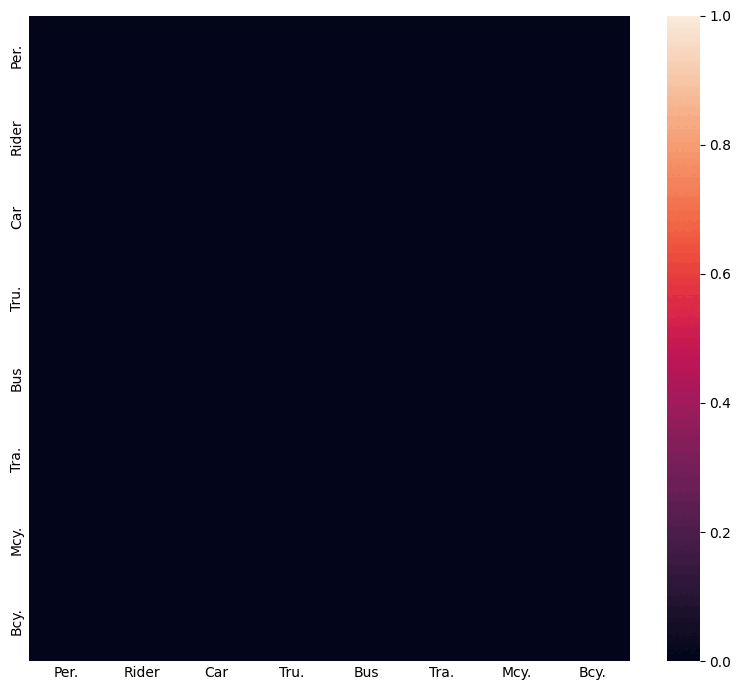
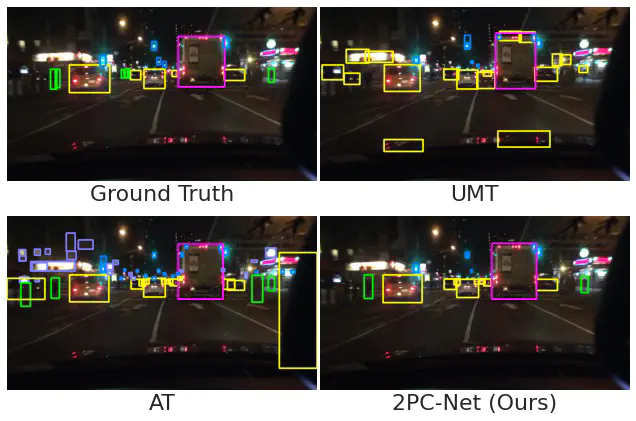

My name is Mikhail Kennerley, and I am a Lead Research Engineer at Home Team Science & Technology Agency (HTX), where I work on computer vision and AI systems. I obtained my PhD in Electrical and Computer Engineering from the National University of Singapore, where I was advised by Prof. Robby Tan and Prof. Bharadwaj Veeravalli. During my doctoral studies, I was also affiliated with Institute for Infocomm Research (I2R), A*STAR, where I collaborated with Dr. Wang Jian-Gang.
Alongside my research and engineering work, I am actively involved in community initiatives through Mendaki Club, where I lead career-focused workshops aimed at helping youths in the Malay/Muslim community explore educational pathways and professional opportunities. I have also contributed to youth development initiatives through programmes organised by the National Youth Council (NYC).
Outside of work, I spend a fair amount of time painting Warhammer 40,000 miniatures, mostly Black Templars (which I find unexpectedly therapeutic) usually accompanied by a good cup of filter coffee.
- March 2025: Visiting the Cambridge Image Analysis group led by Prof. Carola-Bibiane Schönlieb for 3 months.
- June 2024: Starting my internship in HTX Sense-making & Surveillance.
- Feb 2024: Paper on class-imbalance in domain adaptive object detection accepted into CVPR'24!
- Nov 2023: Invited to be part of a Youth Panel to work with MCI on developing policies on Digital Well-being.
- Aug 2023: Participated in Our Singapore Leadership Programme by the National Youth Council (NYC).
My research focuses on learning robust visual models under imperfect supervision, particularly for object detection and semantic segmentation. In real-world settings, visual datasets are often noisy, incomplete, imbalanced, or drawn from multiple sources with differing annotation schemes. I study how vision systems can be trained effectively under these conditions, where both data quality and domain shift present significant challenges.
A central theme of my work is exploring the interplay between model-centric and data-centric approaches to domain adaptation. On the model side, I develop learning strategies that improve robustness to domain shift and class imbalance. On the data side, I investigate methods for aligning and unifying heterogeneous datasets, enabling models to learn from diverse sources despite inconsistencies in labels, distributions, and annotation standards.
More recently, I have become interested in the role of generative synthetic data and emerging world models as tools for improving visual learning. By generating controllable training environments and augmenting datasets with structured synthetic data, these approaches offer new opportunities to study generalization and robustness in vision systems operating under distribution shift.

Label Transfer from multiple source object detection datasets to a target label space. Code soon to be released.

Using inter-class relations to address the class-imbalance problem in domain adaptive object detection.

Utilising low-confidence samples in the student-teacher network to learn more of the target domain.
| topic | role | host | date |
|---|---|---|---|
| Youth Conversations on Online Harms | Panel Moderator & MC | National Youth Council & Ministry of Law, Singapore | 2025 |
| Domain Adaptation and Dataset Unification for Object Detection | Research Speaker | Cambridge Image Analysis Group, University of Cambridge, UK | 2025 |
| Exploiting Inter-Class Dynamics for Domain Adaptive Object Detection | Research Speaker | A*STAR Institute for Infocomm Research | 2024 |
| Domain Adaptation in Day-to-Night Data Shift | Research Speaker | A*STAR Institute for Infocomm Research | 2023 |